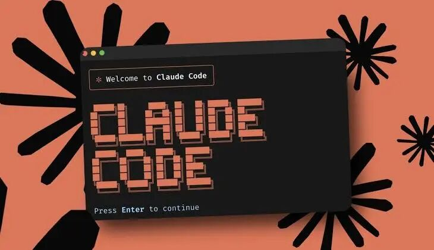
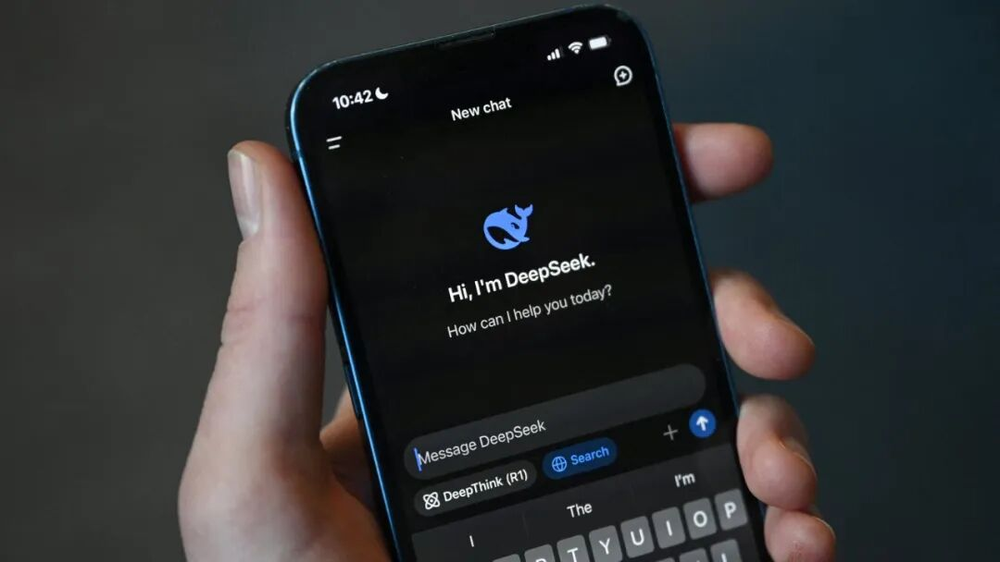
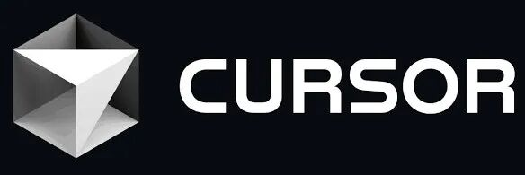

本文快速导览
❶ 大模型推理的毛利率普遍在八九成，是一门茅台级的生意
❷ 贵的一半是税，另一半是真成本
❸ 参考短信和云计算的历史，这个高价撑不过两年
❹ 先降价的人不是慈善家，是先跑的人
❺ 我的五个判断：第一条就是头部 API 毛利跌破 50%
前几天看到 X上的一位博主Orange AI 写的一篇文章，开头是两个真实的故事。
说他一个朋友买了某国产大模型的套餐，每月 700 块的档位。模型确实不错，用起来也舒服，结果两天就把一个月的额度烧完了。
另一位朋友试了某大厂的 AI 套餐，每月 200 块，总共用了 3 次，一周的额度就见了底。
而大洋彼岸，OpenAI 30 美金和 Anthropic 100 美金的套餐，用户的普遍体感是"耐用"。
我自己平时用的是codex和kimi的月度套餐，加上没有写代码的需求，工作量也不算是很大，但额度已经用着挺费劲了。
再来看看几组真实数据。
1、编程开发者的日均 token 消耗中位数是 467 万，前 1% 的重度用户烧掉的量是中位数的 53 倍。让 AI 真正干活的人，消耗是聊天用户的几十上百倍。
2、为这群人准备的套餐档位，Kimi Allegro 699 元/月，智谱 Max 469 元/月，阿里 Token Plan 最高 1398 元/月。
3、这组最说明问题：中国 API 的单价明明是美国的 1/10 甚至 1/60，C 端套餐给的额度却更紧。
有博主实测 Claude Pro，20 美元（约 140 元）的月费，每周最多能用出约 180 美元的额度。花 140 元，用出 1300 元的量。API 便宜和套餐抠门，两件事同时成立。

当然，如果你觉得"我没觉得贵啊"，你的体感肯定也没错：国内 AI 应用的主体是免费的，豆包月活 3.45 亿、DeepSeek 1.27 亿，两家都没有付费会员。只拿 AI 聊天、写周报、查资料，确实又便宜又够用。
所以很多人都在说，AI 真的太贵了。
这些人不是 3 亿免费用户，而是那些重度用户，也是那些真的再拿AI做应用干事的人。
这其实是一件吊诡的事。
中国的人力成本低，电力便宜，推理优化做到世界极致，国产模型还大多是开源的，API 单价全球最低。
那为什么落到用户手里的，仍然是高价格和低额度？
答案藏在一笔账里。
一、
大模型的毛利率，普遍在 90%！
先看一笔官方公开数据。
2025 年 3 月，DeepSeek 发布《DeepSeek-V3/R1 推理系统概览》，首次披露：推理系统每日总成本 87,072 美元。
如果所有 token 都按 R1 定价收费，理论日收入 562,027 美元——成本利润率 545%，即每 1 元成本赚 5.45 元利润，收入是成本的 6.45 倍。
换算成毛利率：5.45 ÷ 6.45 ≈ 84.5%。外界按 R1 实际定价测算的结果也是 85% 上下，定价更低的 V3，实际毛利率约 70%。
另一个公开旁证来自海外。
SemiAnalysis 今年 5 月的报告测算：Anthropic 综合毛利率已升至 60% 中段，核心的 API 业务毛利率超过 80%，每兆瓦算力对应的年化收入九个月从 1600 万美元涨到 6000 万美元。
还有一道算术题可以交叉验证。
7 月 23 日前后，梁神的投资人内部交流会的讲话流出，3 小时 44 分钟的闭门交流、共 118 个问题。

纪要中称
梁神说，DeepSeek 的定价逻辑是"买一批设备回来，大概十个月收回成本"，对应的毛利率大约 60%。
他还讲了个细节：最早担心需求太多，把价格定得比较高，"团队里大家不是很高兴。后来我把价格又降下来了，降到四分之一，大家就很开心"。
把这两个放在一起，可以直接推出降价前的毛利率。推理的成本由算力决定，跟定价高低没有关系，所以降价前后成本不变。
推理成本由算力决定、与定价无关，成本不变，列个算式：假设售价 10 元降低1/4到 2.5 元、毛利 60%，成本就是 1 元，那么降价前的毛利率，90%！
一个官方披露的 84.5%，一个机构测算的 80%+，一道算术反推的 90%。三个独立来源指向同一件事：大模型推理的毛利率，普遍在八九成。
90% 毛利是什么概念？
A 股四千多家上市公司，能做到这个毛利率的，可能只有茅台。很多人觉得大模型是水电煤一样的基础设施，定价应该贴着成本走。但这笔账告诉我们：至少到今天为止，它却一直是被当成茅台在卖的。
二、
大模型为什么这么贵？一半是税，一半是成本
先给结论：你今天为模型付的钱，一半有成本依据，另一半没有。没有的那一半，可以管叫它"税"。
先说便宜的那一半：成本真的很低。
有工程师按 DeepSeek R1 的公开架构拆过推理成本：输入环节约 0.001 美元/百万 token，约等于不要钱。输出环节约 3 美元/百万 token。
具体数字业内有争议，但方向没有争议。大模型推理的边际成本接近软件，不接近基础设施。而且国产模型大多开源，谁都能部署，连"资源垄断所以贵"这条理由都不成立。
再说贵的那一半：价格根本不参考成本，参考的是你的工资。
一个程序员月成本两万，模型替他干 30% 的活，每月收七百块你就觉得合理；一份咨询报告市场价五万，模型十分钟生成初稿，收一千你也觉得值。
这就是行业通行的定价逻辑：替代方案要多少钱，它就收多少钱，和自己的成本无关。你的预算，才是定价的锚。
行业里唯一看起来不赚钱的是 OpenAI，一季度调整后运营利润率 -122%。但它亏的是训练投入、9 亿免费用户和数据中心军备竞赛，不是推理。亏钱的不是大模型，是 OpenAI 的商业模式。
但也要说句公道话：最贵的那部分模型，贵得有依据。
市场永远只追最强的模型，而最强模型的训练和推理账单始终那么贵，从来不便宜。
GPT-4 是便宜了 26 倍，但没人用了。智谱今年 2 月发布 GLM-5 时逆势提价 45%-67%，背后也有真实的成本压力。
所以说，同等能力的模型，贵的是税，会消失。顶尖模型的贵是成本，会留下。
同质化能力的模型几乎全身是税，会跌得最狠，顶尖模型有成本托底，跌的是溢价，跌不穿底价。
三、
这个价撑不过两年：
短信的 2012 年，就是大模型的现在
既然 90% 毛利里可坍缩的那部分是窗口期的税，接下来的问题就是：
这个窗口还能开多久？
我们对这道题其实一点也不陌生，因为我们之前经历过一模一样的一轮。
一条短信的传输成本几乎为零，运营商卖你一毛钱。边际成本趋零、按条计价、毛利高到不好意思公布。
你看，和今天的 token 一模一样。2012 年，中国短信业务量冲到接近九千亿条的峰值，是运营商最肥的现金牛之一。
然后呢？运营商没有降价，也没有互相打价格战。杀死短信的不是更便宜的短信，是微信，一个直接绕过"按条计价"体系的东西。短信业务量在随后几年断崖式下跌，运营商从现金牛的拥有者，变成了管道。
再看云计算。AWS 早期同样维持着令同行眼红的高毛利，但贝索斯的动作是十几年主动降价上百次，把运营利润率压到 30% 左右，然后用规模和成本优势让所有后来者没法进场。
云的故事证明的是另一半规律：基础设施生意的终局不是高毛利，是"低毛利×大规模"，而主动降价是把终局提前兑现给自己、同时堵死对手的手段。
短信给了上半场，AWS 给了下半场。合起来就是大模型的剧本：毛利坍缩有两种死法。要么计价体系被绕过（短信式猝死），要么领先者主动降价把毛利打到终局水平（AWS 式安乐死）。选一个。
而毛利坍缩从来不靠道德自觉，靠的是条件成熟。
基础设施行业的毛利坍缩，历史上需要三个条件，现在已经齐了两个半：
开源平替有了（DeepSeek、Qwen 把"够用"的能力变成了公共品），能力趋同基本有了（头部模型的 SOTA 保质期从年缩到月），计价标准化有半个（token 是标准品，但"智能"还不是，所以顶尖模型死不了）。
两个半条件在手，坍缩不是会不会的问题，是先从哪里开始的问题。
我觉得顺序会是：先从 C 端套餐崩，再传导到 API。
C 端是价格弹性最大、替代品最多、用户最没忠诚度的地方。七百块一个月的套餐两天烧完，这种定价在竞争面前没有任何防御力。
Anthropic 和 OpenAI 已经用 30 美金、100 美金的 Token Plan 证明了，把 API 价打包成订阅，本质就是降价十倍换增长。
国内厂商今年会一个接一个跟上，因为不跟的人会把 C 端入口整个让掉。
C 端套餐一崩，B 端客户会拿着订阅价去砍 API 价。"你 C 端都这个价了，凭什么 API 收我十倍？"90% 的 API 毛利，就是这么被拆掉的。
四、
先降价的人不是慈善家，
是先跑的人
整场投资人闭门会里，梁神最值钱的一段话不是技术判断，我觉得是这个：
"假如 AI 能占 GDP 的百分之二十，我想拿走其中百分之五的利润，账算得过来。但问题是，他会被另外一个愿意只占百分之一的人打败。"
拿得多的人，会被拿得少的人打败。
把这句话和坍缩推演放在一起，你会看懂 DeepSeek 所有"反常"的动作。
十个月回本、六倍利润、"确实还有降价空间"、V4 Flash 直接把价格打到行业底价。
这不是情怀，是按终局价格提前定价。
逻辑很冷酷：如果你知道毛利注定要坍缩到 30%-40%，理性选择只有一个，赶在别人之前坍缩。
先降价的人吃掉规模和口碑，把对手的利润池提前抽干。抱着茅台价不放的人，会在窗口关闭那天发现手里的定价权已经过期。
AWS 当年干的就是这件事，它不是在让利，是在用降价修护城河。
OpenAI 则是另一种赌法：顶着 -122% 的运营利润率烧钱，赌的是在毛利坍缩之前完成生态锁定。9 亿周活用户、企业工作流、硬件入口。锁住了，坍缩之后它就是收租的平台。锁不住，它就是最贵的那条短信。
两种赌法都成立。
唯独不成立的是中间状态：既没有 DeepSeek 的成本结构，又没有 OpenAI 的生态锁定，还按茅台价收钱。这批玩家，是坍缩的第一批死者。
至于应用层，答案同样是推演出来的。
Cursor是全球最大的独立 AI 编程平台，年化收入突破 20 亿美元，2025 年依然亏损至少 1.5 亿美元，因为收入的大头转手就付给了上游模型 API。连赛道里最赚钱的应用都活成这样，其他场景可想而知。模型层毛利每坍缩 10 个点，应用层就多出一截活路。

现在做 AI 应用创业，本质是在替模型厂商打工，等茅台价落地，才轮到应用公司算账。
五、
我的五个判断
综合以上，我自己有几个判断：
1. 两年内，头部厂商 API 的综合毛利率大概会从 80%-90% 跌到 50% 以下，向云计算30%-40%的终局区间靠拢。C 端套餐价今年内先崩，跌的是税，不是真成本，同等能力会便宜很多，最强能力依然贵。
2. 先死的不是模型厂，是中间商。纯 API 转售、套壳应用、靠信息差赚模型差价的服务商，会在坍缩中被两头挤干，上游降价传导不到它们，下游客户直接找原厂。
3. "无限量套餐"会消失，"高额度套餐"会变便宜。Claude Code 取消无限档已经预演了前半句：按健身房模式卖的订阅，遇到重度用户就是亏损。套餐会继续存在，但定价逻辑会从"卖额度"变成"卖智能密度"。
4. 应用层的春天在坍缩之后，不在现在。模型层 90% 毛利一天不破，AI 应用就一天算不过账，2C 爆款就一天长不出来。坍缩才是真正的大模型应用元年的发令枪。
5. 对个人用户的建议很具体：别买年付套餐。一个毛利注定坍缩的市场，年付就是替厂商锁死降价前的最后一批利润。月付，等价格战打到你头上。
那份纪要里，还有一句被反复引用的话。有人认为十个月回本的利润仍然太高，得到的回答是：
"确实还有降价空间。"
如果这句话是真的，那说这话的人大概率是最早看懂这件事的人之一——语气里听不出一点心疼。
不心疼，是因为他知道：暴利时代的定价权，守住它会随它一起死，先放弃它的人才能活下来收租。
谢谢您嘞🙇